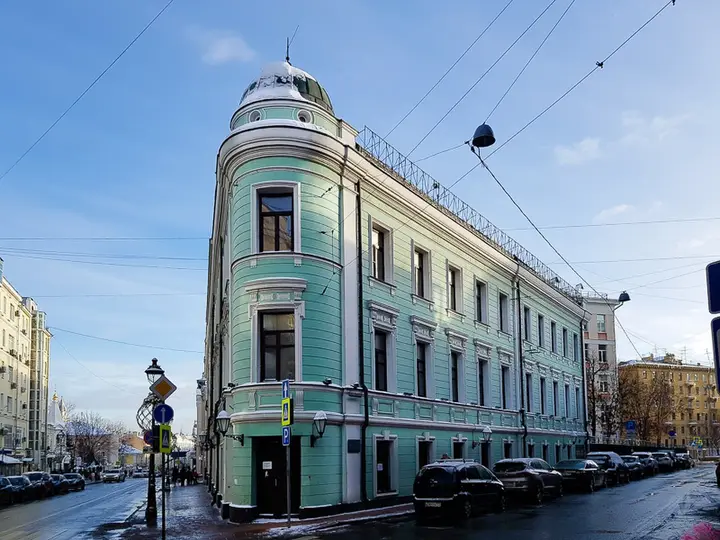

Фото: CaneCorso, CC BY-SA 4.0 · Wikimedia Commons
Концепт-стор и кафе · ЦАО
Nuself
Концепт-стор во французском стиле с камином, библиотекой и выпечкой Masa Madre.
- ₽ · до 1 500 ₽ на человека
Позвать сюда: NuselfОткрыть в каталоге: NuselfМаршрут до места: Nuself
Адрес и детали
- Адрес
- ул. Большая Никитская, 17, стр. 1
Открыть на Яндекс Картах (в новой вкладке) - Метро
- м. Арбатская
- Округ
- Центр (ЦАО)
- Цена
- до 1 500 ₽ на человека
- Часы работы
- пн–вс 10:00–22:00 · проверили в октябре 2026
- Телефон
- +7 (800) 302-30-93
- Проверено
- работает — проверили в октябре 2026
Похожие рядом
Что ещё рядом

Как позвать
- Выбери план, место или событие — в карточке адрес, цены и маршрут в Яндекс Картах.
- Нажми «Позвать сюда» — соберётся приглашение-игра для свидания или голосование для компании.
- Отправь ссылку в любой мессенджер: тебе ответят, а компания отметит, куда и когда может. Бесплатно и без регистрации.